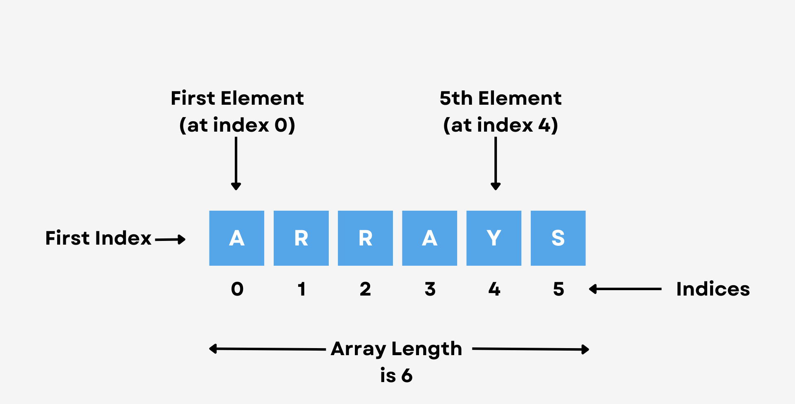
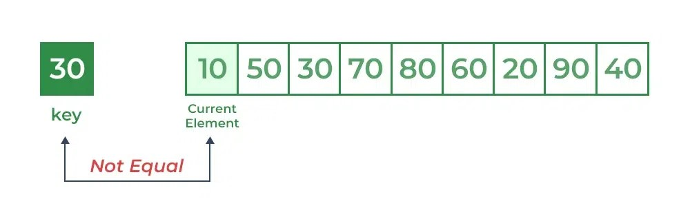
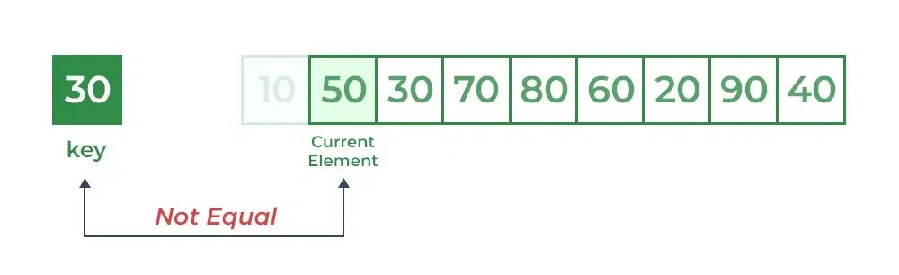
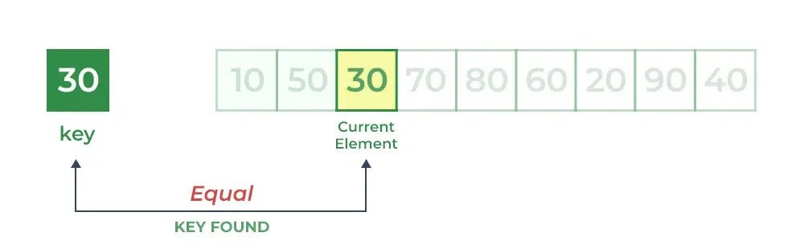

Arrays
What is an Array?
An array is a collection of items of same data type stored at contiguous memory locations.
In computer science, an array is a data structure consisting of a collection of elements (values or variables), of same memory size, each identified by at least one array index or key. An array is stored such that the position of each element can be computed from its index tuple by a mathematical formula.
Arrays are among the oldest and most important data structures, and are used by almost every program. They are also used to implement many other data structures, such as lists and strings. They effectively exploit the addressing logic of computers. In most modern computers and many external storage devices, the memory is a one-dimensional array of words, whose indices are their addresses. Processors, especially vector processors, are often optimized for array operations.
Elements identifier and addressing formulas
When data objects are stored in an array, individual objects are selected by an index that is usually a non-negative scalar integer. Indexes are also called subscripts. An index maps the array value to a stored object.
There are three ways in which the elements of an array can be indexed:
- 0 (zero-based indexing) :
- The first element of the array is indexed by subscript of 0.
- 1 (one-based indexing) :
- The first element of the array is indexed by subscript of 1.
- n (n-based indexing) :
- The base index of an array can be freely chosen. Usually programming languages allowing n-based indexing also allow negative index values and other scalar data types like enumerations, or characters may be used as an array index.
Using zero based indexing is the design choice of many influential programming languages, including C, Java and Lisp. This leads to simpler implementation where the subscript refers to an offset from the starting position of an array, so the first element has an offset of zero.
Arrays can have multiple dimensions, thus it is not uncommon to access an array using multiple indices. For example, a two-dimensional array A with three rows and four columns might provide access to the element at the 2nd row and 4th column by the expression A[1][3] in the case of a zero-based indexing system. Thus two indices are used for a two-dimensional array, three for a three-dimensional array, and n for an n-dimensional array.
The number of indices needed to specify an element is called the dimension, dimensionality, or rank of the array.
In standard arrays, each index is restricted to a certain range of consecutive integers (or consecutive values of some enumerated type), and the address of an element is computed by a "linear" formula on the indices.
Types of Arrays
One-dimensional arrays
A one-dimensional array (or single dimension array) is a type of linear array. Accessing its elements involves a single subscript which can either represent a row or column index.
As an example consider the C declaration int anArrayName[10]; which declares a one-dimensional array of ten integers. Here, the array can store ten elements of type int . This array has indices starting from zero through nine. For example, the expressions anArrayName[0] and anArrayName[9] are the first and last elements respectively.
Multidimensional arrays
For a multidimensional array, the element with indices i,j would have address B + c · i + d · j, where the coefficients c and d are the row and column address increments, respectively.
For example: int a[2][3];
This means that array a has 2 rows and 3 columns, and the array is of integer type. Here we can store 6 elements they will be stored linearly but starting from first row linear then continuing with second row.
Traversing and Searching in an Array
Traversing
Given an integer array of size N, the task is to traverse and print the elements in the array.
INPUT : [-2,1,4,-10,3]
OUTPUT : -2 1 4 -10 3
Approach :
- Start a loop from 0 to N-1, where N is the size of array.
- Access every element of array with help of arr[index] (where arr is name of the given array)
- Print the elements.
Time Complexity: O(N) Since one traversal of the array is required to complete all operations hence overall time required by the algorithm is linear
Space Complexity:O(1) Since no extra array is used so the space taken by the algorithm is constant
Searching
Searching Algorithms are designed to check for an element or retrieve an element from any data structure where it is stored.
Based on the type of search operation, these algorithms are generally classified into two categories:
Linear Search
Linear Search is defined as a sequential search algorithm that starts at one end and goes through each element of a list until the desired element is found, otherwise the search continues till the end of the data set.
In Linear Search Algorithm,
- Every element is considered as a potential match for the key and checked for the same.
- If any element is found equal to the key, the search is successful and the index of that element is returned.
- If no element is found equal to the key, the search yields “No match found”.
For example:Consider the array arr[] = {10, 50, 30, 70, 80, 20, 90, 40} and key = 30
Step 1: Start from the first element (index 0) and compare key with each element (arr[i]).
Comparing key with first element arr[0]. SInce not equal, the iterator moves to the next element as a potential match.
Comparing key with next element arr[1]. SInce not equal, the iterator moves to the next element as a potential match.
Step 2: Now when comparing arr[2] with key, the value matches. So the Linear Search Algorithm will yield a successful message and return the index of the element when key is found (here 2).
Time Complexity:
- Best Case: In the best case, the key might be present at the first index. So the best case complexity is O(1)
- Worst Case: In the worst case, the key might be present at the last index i.e., opposite to the end from which the search has started in the list. So the worst-case complexity is O(N) where N is the size of the list.
- Average Case: O(N)
Binary Search
Binary Search is defined as a searching algorithm used in a sorted array by repeatedly dividing the search interval in half. The idea of binary search is to use the information that the array is sorted and reduce the time complexity to 0 (log N).
Conditions for when to apply Binary Search in a Data Structure:
- The data structure must be sorted.
- Access to any element of the data structure takes constant time.
Binary Search algorithm,
- Divide the search space into two halves by finding the middle index “mid”.
- If the key is found at middle element, the process is terminated.
- If the key is not found at middle element, choose which half will be used as the next search space.
- If the key is smaller than the middle element, then the left side is used for next search.
- If the key is larger than the middle element, then the right side is used for next search.
- This process is continued until the key is found or the total search space is exhausted.
For example: Consider the array arr[] = {-5,-4,-3,-2,-1,0,1,2,3,4,5} and key = 2
First Step: Calculate the mid and compare the mid element with the key. If the key is less than mid element, move to left and if it is greater than the mid then move search space to the right.
Key is greater than current mid element. The search space moves to the right.

Key is less than the current mid 3. The search space moves to the left.

Second Step: If the key matches the value of the mid element, the element is found and stop search.

Time Complexity:
- Best Case:O(1)
- Average Case: O(log N)
- Worst Case: O(log N)
Space Complexity:O(1),If the recursive call stack is considered then the auxiliary space will be O(logN).